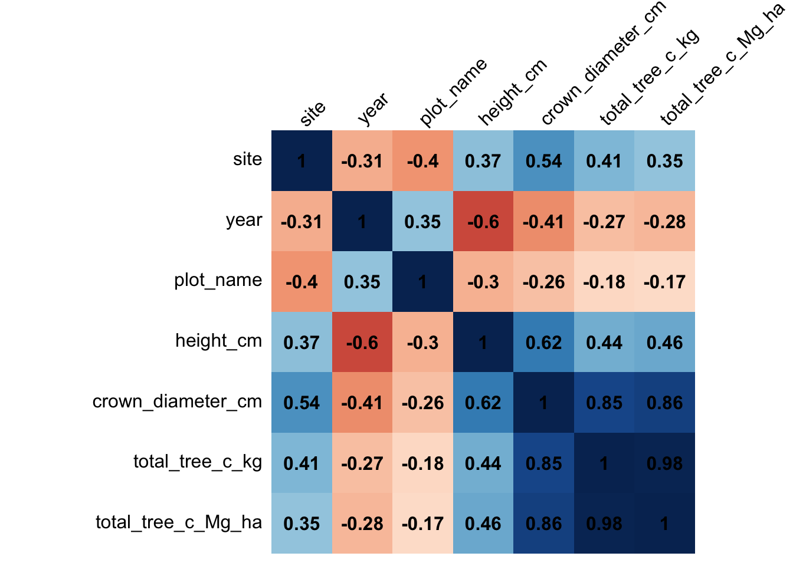

Silvestrum Assignment
Introduccion
This assignment aims to estimate the required number of plots per project based on tree carbon variance by analyzing the data from two sites (A and B). The analysis involved data cleaning, processing, creation of a correlation matrix, and power calculations to deepen the understanding of the correlation between variables. The statistical analysis was performed using the R programming language in R Studio. Tables and graphs were created to visualize the findings and draw conclusions about the sampled trees and plots. The A/R methodological Tool was used to measure and compare the number of plots required per plantation year. Please note that the preliminary results presented in this report require further review and fine-tuning for real samples in the field.
Steps:
- Load the necessary libraries
- Read the CSV files
- Clean and change column types as needed
- Filter, join and create a data frame with all samples from Site A and Site B, ensuring that only 154m2 sample plots are included (Table #1)
- Create a correlation matrix to understand the variables affecting Total Tree Carbon (Mg/ha)
- Run a power calculation to determine the number of trees needed per plot
- Create a table (#2) with all the necessary stats information grouped by plot
- Create a graph (#1) to show the effect of tree count on the standard deviation of carbon per plot
- Create a for loop that runs a power calculation per plot and shows the estimated number of trees required to maintain a 90% power. This information is displayed in Table #3
- Create a graph (#2) that shows the effect of tree size variation (SD tree Diameter) on the recommended decrease of total number of trees to be measured per plot
- Create a graph (#3) that shows how the mean of tree size (crown_diameter_cm) affects the standard deviation of carbon (Mg/ha) per plot
- Draw conclusions regarding the sampled trees
- Analyze and calculate the total number of plots per plantation year (project)
- Create a table that contains all the information for the analysis
- Create a for loop that runs a power calculation per plantation year and shows the estimated number of plots required to maintain a 90% power. This information is displayed in Table #4
- Create a table (#4) grouping per plantation year
- Create a for loop that runs the A/R Methodological Tool
- Merge all results in a table (#5)
- Create a graph (#4) that shows the calculated number of plots per method and per project
- Draw conclusions around the calculations required for estimating biomass stocks and the number of plots required using different methods
- An extra linear regression (OLS) analysis
Notes:
1) To increase the amount of data available for the analysis I merge the data from both sites, I have made the assumption of combining the crown size diameter data from Site B (Crown Dia (cm) ) with the CD Chatting in cm from site A (CD Chatting (m) ). I assume this is right.
2) The PDF report only shows some of the code and steps to perform the analysis. The full details of the analysis, including the code and steps, can be found in the original script file (.Rmd).”
 {width=“50%”, fig.align = “center}
{width=“50%”, fig.align = “center}
Step 1, 2, 3
These steps were completed within the environment of the R Markdown.
Step 4
Here is an overview of the complete data frame comprising information from both sites is provided below. Please note that the Table below is showing only the first 10 records.
| site | year | plot_name | full_plot_name | height_cm | crown_diameter_cm | total_tree_c_kg | total_tree_c_Mg_ha |
|---|---|---|---|---|---|---|---|
| A | 2017 | Sample_Plot#08 | siteA_2017_plot_08 | 112 | 58 | 0.415 | 0.027 |
| A | 2010 | Sample_Plot#05 | siteA_2010_plot_05 | 217 | 335 | 17.639 | 1.146 |
| A | 2017 | Sample_Plot#19 | siteA_2017_plot_19 | 211 | 63 | 0.495 | 0.032 |
| A | 2017 | Sample_Plot#19 | siteA_2017_plot_19 | 209 | 102 | 1.374 | 0.089 |
| A | 2017 | Sample_Plot#17 | siteA_2017_plot_17 | 207 | 52 | 0.324 | 0.021 |
| A | 2017 | Sample_Plot#19 | siteA_2017_plot_19 | 201 | 44 | 0.230 | 0.015 |
| A | 2010 | Sample_Plot#02 | siteA_2010_plot_02 | 200 | 339 | 18.151 | 1.179 |
| A | 2010 | Sample_Plot#05 | siteA_2010_plot_05 | 199 | 160 | 3.640 | 0.236 |
| A | 2017 | Sample_Plot#19 | siteA_2017_plot_19 | 198 | 140 | 2.735 | 0.178 |
| A | 2017 | Sample_Plot#16 | siteA_2017_plot_16 | 197 | 80 | 0.826 | 0.054 |
[1] "The dimensions of this complete data frame are 12110 rows and 8 columns."Step 5
Create a correlation Matrix to see the importance of the variables.
# Obtain correlation matrix
tree_matrix <- cor(mangrove_recipe)
# Make a correlation plot between the variables
corrplot(tree_matrix,
method = "shade",
shade.col = NA,
tl.col = "black",
tl.srt = 45,
addCoef.col = "black",
cl.pos = "n",
order = "original")
As we can see in the matrix above the height of the tree is relevant height_cm with 0.46 of correlation but the crown/diameter column is even greater with 0.86 (Strong positive correlation).
The strength of the correlation coefficient (0.86) suggests that this relationship is fairly robust, with a high degree of association between the two variables. In other words, as the crown size of the tree increases, there is a tendency for the total tree calculated carbon to also increase. However, that correlation does not necessarily imply causation. Other factors, such as environmental conditions, soil quality, or other factors, may also play a role in determining both crown size and carbon content in mangrove trees.
Step 6
Run a power calculation to determine the number of trees needed per plot:
Step 6 (a)
Create a Table #2 with all the necessary stats information grouped by plot
| site | year | plot_name | tree_count | density | mean_height_cm | sd_height | mean_diameter_cm | sd_diameter | mean_biomass | sd_biomass | mean_carbon_Mg_ha | sd_carbon_Mg_ha | std_error |
|---|---|---|---|---|---|---|---|---|---|---|---|---|---|
| A | 2010 | Sample_Plot#01 | 86 | 0.5584416 | 86.17442 | 30.92693 | 75.54651 | 39.19293 | 0.9657442 | 1.0947549 | 0.0627558 | 0.0710911 | 0.0076660 |
| A | 2010 | Sample_Plot#02 | 122 | 0.7922078 | 95.46721 | 30.63547 | 80.65574 | 47.28020 | 1.2030410 | 2.4984078 | 0.0781475 | 0.1622883 | 0.0146929 |
| A | 2010 | Sample_Plot#03 | 110 | 0.7142857 | 91.60000 | 29.65063 | 73.37273 | 39.87684 | 0.9327545 | 1.2939229 | 0.0605818 | 0.0840624 | 0.0080150 |
| A | 2010 | Sample_Plot#04 | 96 | 0.6233766 | 75.52083 | 29.07304 | 61.43750 | 32.39487 | 0.6255729 | 0.7274552 | 0.0406354 | 0.0472439 | 0.0048218 |
| A | 2010 | Sample_Plot#05 | 84 | 0.5454545 | 110.82143 | 34.41076 | 84.08333 | 50.58720 | 1.3287024 | 2.2536581 | 0.0863095 | 0.1463794 | 0.0159713 |
| A | 2010 | Sample_Plot#06 | 107 | 0.6948052 | 77.53271 | 26.49504 | 63.10280 | 34.77798 | 0.6768411 | 0.7745304 | 0.0439720 | 0.0503125 | 0.0048639 |
| A | 2010 | Sample_Plot#07 | 141 | 0.9155844 | 76.63121 | 29.29222 | 66.66667 | 46.99281 | 0.9031135 | 1.7259408 | 0.0586809 | 0.1121233 | 0.0094425 |
| A | 2017 | Sample_Plot#08 | 203 | 1.3181818 | 101.35961 | 13.85690 | 55.50739 | 25.61353 | 0.4798522 | 1.3159980 | 0.0311379 | 0.0854794 | 0.0059995 |
| A | 2017 | Sample_Plot#09 | 202 | 1.3116883 | 104.97525 | 15.69816 | 60.95545 | 20.31035 | 0.5216238 | 0.6412533 | 0.0338564 | 0.0416694 | 0.0029319 |
| A | 2017 | Sample_Plot#12 | 298 | 1.9350649 | 96.80872 | 15.26600 | 49.37919 | 14.31560 | 0.3211477 | 0.2032983 | 0.0208591 | 0.0132004 | 0.0007647 |
[1] "The dimensions of this sample plot data frame are 129 rows and 14 columns."Step 6 (b)
Generate a graph (Graph #1) that visually represents the relationship between the number of trees counted per plot and the resulting standard deviation of carbon per plot.
The graph (#1) illustrates that as the number of sampled trees increases, the divergence of the carbon calculations (SD) decreases significantly. However, it is important to find and establish a threshold for the optimal number of trees required to achieve an accurate estimate.
Step 6 (c)
Creating a new vector for the Power Calculation of number of trees
new_vector <- c()
for(i in 1:nrow(full_plots)) {
sd = full_plots$sd_carbon_Mg_ha[[i]]
mean = full_plots$mean_carbon_Mg_ha[[i]]
d1 = as.numeric(sqrt(sd^2/2))
effect_size = mean / d1
power_test <- pwr.t.test(d = round(effect_size,2),
power = 0.90,
sig.level = 0.05,
type="two.sample",
alternative="two.sided")
new <- round(power_test$n,1)
new_vector <- c(new_vector, new)
}| site | year | plot_name | tree_count | power | difference | density | mean_height_cm | sd_height | mean_diameter_cm | sd_diameter | mean_biomass | sd_biomass | mean_carbon_Mg_ha | sd_carbon_Mg_ha | std_error |
|---|---|---|---|---|---|---|---|---|---|---|---|---|---|---|---|
| A | 2010 | Sample_Plot#01 | 86 | 14.5 | 83.1 | 0.5584416 | 86.17442 | 30.92693 | 75.54651 | 39.19293 | 0.9657442 | 1.0947549 | 0.0627558 | 0.0710911 | 0.0076660 |
| A | 2010 | Sample_Plot#02 | 122 | 46.4 | 62.0 | 0.7922078 | 95.46721 | 30.63547 | 80.65574 | 47.28020 | 1.2030410 | 2.4984078 | 0.0781475 | 0.1622883 | 0.0146929 |
| A | 2010 | Sample_Plot#03 | 110 | 21.2 | 80.7 | 0.7142857 | 91.60000 | 29.65063 | 73.37273 | 39.87684 | 0.9327545 | 1.2939229 | 0.0605818 | 0.0840624 | 0.0080150 |
| A | 2010 | Sample_Plot#04 | 96 | 15.1 | 84.3 | 0.6233766 | 75.52083 | 29.07304 | 61.43750 | 32.39487 | 0.6255729 | 0.7274552 | 0.0406354 | 0.0472439 | 0.0048218 |
| A | 2010 | Sample_Plot#05 | 84 | 31.5 | 62.5 | 0.5454545 | 110.82143 | 34.41076 | 84.08333 | 50.58720 | 1.3287024 | 2.2536581 | 0.0863095 | 0.1463794 | 0.0159713 |
| A | 2010 | Sample_Plot#06 | 107 | 14.7 | 86.3 | 0.6948052 | 77.53271 | 26.49504 | 63.10280 | 34.77798 | 0.6768411 | 0.7745304 | 0.0439720 | 0.0503125 | 0.0048639 |
| A | 2010 | Sample_Plot#07 | 141 | 39.4 | 72.1 | 0.9155844 | 76.63121 | 29.29222 | 66.66667 | 46.99281 | 0.9031135 | 1.7259408 | 0.0586809 | 0.1121233 | 0.0094425 |
| A | 2017 | Sample_Plot#08 | 203 | 78.7 | 61.2 | 1.3181818 | 101.35961 | 13.85690 | 55.50739 | 25.61353 | 0.4798522 | 1.3159980 | 0.0311379 | 0.0854794 | 0.0059995 |
| A | 2017 | Sample_Plot#09 | 202 | 16.9 | 91.6 | 1.3116883 | 104.97525 | 15.69816 | 60.95545 | 20.31035 | 0.5216238 | 0.6412533 | 0.0338564 | 0.0416694 | 0.0029319 |
| A | 2017 | Sample_Plot#12 | 298 | 5.4 | 98.2 | 1.9350649 | 96.80872 | 15.26600 | 49.37919 | 14.31560 | 0.3211477 | 0.2032983 | 0.0208591 | 0.0132004 | 0.0007647 |
[1] "The dimensions of this sample plot data frame are 129 rows and 16 columns."As presented in the table above, the number of trees achieving a power level of 0.90 is indicated by the yellow highlighting, whereas the percentage reduction of samples being measured is indicated by the green highlighting.
Step 6 (d)
Create a graph (#2)
Graph #2 presents a relationship between variance in tree sizes and the difference between the estimated total trees by the power calculation and the actual number of samples. It suggests that plots with higher variance may require more tree samples, while those with lower variation may require fewer samples.
Step 6 (e)
Produce Graph #3 illustrating the relationship between the average size of trees (measured by crown diameter in centimeters) and the standard deviation of carbon (in Mg/ha) per plot.
Graph #3 displays the impact of the mean tree size (crown diameter in centimeters), on the standard deviation of carbon (Mg/ha) per plot. The graph demonstrates a noticeable rise in the variability of carbon calculations as the size of trees increases.
Step 6 (f)
Conclusions for calculating the amount of trees
The power calculation in Table #3 suggests that a significant reduction in the number of trees measured is possible while still maintaining a 90% power level. However, plots with high variance may require additional sampling to maintain the same level of power.
Graph #1 demonstrates that there is an inverse relationship between the number of trees measured per plot and the Std. Deviation of the calculated Carbon (Mg/ha) per plot. This suggests that increasing the number of trees sampled can lead to more precise carbon measurements. However, there is a trade-off between accuracy and efficiency, as increasing the number of trees sampled can also increase project costs. Therefore, we proceeded with the power calculation method to determine the optimal number of trees to be sampled.
Graph #2 suggests that most plots can significantly reduce the number of sampled trees, except for outliers (
2019 Sample Plot# 01,2018 Sample Plot# 02, and2015 Sample Plot# 06), which exhibit unusual data and behavior and may require additional sampling to ensure accurate carbon measurement.Graph #3 reveals a significant relationship between canopy diameter and the SD of Carbon calculated. The analysis indicates that larger trees tend to contribute to greater disturbance and variation in the overall carbon calculations, suggesting that careful consideration of sample selection is necessary to minimize variability in carbon measurements.
Step 7 (a)
Analyze and calculate the total number of plots per plantation year (project):
`summarise()` has grouped output by 'site'. You can override using the
`.groups` argument.Step 7 (b)
Creating a new vector for the Power Calculation with the carbon biomass data (Total Tree Carbon (Kg))
new_vector2 <- c()
for(i in 1:nrow(summary_full_df)) {
sd = summary_full_df$sd_biomass[[i]]
mean = summary_full_df$mean_biomass[[i]]
d1 = as.numeric(sqrt(sd^2/2))
effect_size = mean / d1
power_test <- pwr.t.test(d = effect_size,
power = 0.90,
sig.level = 0.05,
type="two.sample",
alternative="two.sided")
new <- round(power_test$n,1)
new_vector2 <- c(new_vector2, new)}Step 7 (c)
Create a table (#4) grouping per plantation year
| site | year | plot_count | power | tree_count | density | mean_height_cm | sd_height_cm | mean_diameter_cm | sd_diameter_cm | mean_biomass | sd_biomass | mean_tot_carbon_Mg_ha | sd_tot_carbon_Mg_ha | std_error |
|---|---|---|---|---|---|---|---|---|---|---|---|---|---|---|
| A | 2010 | 7 | 33.2 | 746 | 106.57143 | 86.85523 | 31.93930 | 71.74397 | 42.87782 | 0.9435054 | 1.6508646 | 0.0612936 | 0.1072349 | 0.0405310 |
| A | 2017 | 18 | 16.7 | 3467 | 192.61111 | 83.88232 | 30.36364 | 55.01183 | 23.99012 | 0.4539590 | 0.5544686 | 0.0294912 | 0.0360131 | 0.0084884 |
| A | 2019 | 8 | 7.9 | 998 | 124.75000 | 57.19940 | 14.06031 | 49.92084 | 19.54099 | 0.3543487 | 0.2851646 | 0.0230401 | 0.0185163 | 0.0065465 |
| A | 2020 | 46 | 9.6 | 4956 | 107.73913 | 44.78834 | 14.35749 | 42.16889 | 21.47614 | 0.2729068 | 0.2461327 | 0.0177207 | 0.0159968 | 0.0023586 |
| B | 2015 | 7 | 30.9 | 338 | 48.28571 | 106.13314 | 43.46106 | 139.73077 | 80.25432 | 3.8606509 | 6.5105214 | 0.1548225 | 0.2601908 | 0.0983429 |
| B | 2016 | 13 | 17.8 | 629 | 48.38462 | 119.43402 | 42.34072 | 141.26709 | 68.74564 | 3.6142448 | 4.5645982 | 0.1447854 | 0.1825147 | 0.0506205 |
| B | 2017 | 11 | 18.6 | 439 | 39.90909 | 96.05695 | 37.24716 | 95.98178 | 47.34253 | 1.6265604 | 2.1047953 | 0.0651936 | 0.0844315 | 0.0254570 |
| B | 2018 | 7 | 26.0 | 207 | 29.57143 | 70.78261 | 29.40900 | 95.75362 | 50.18463 | 1.6328019 | 2.5186589 | 0.0655072 | 0.1013626 | 0.0383115 |
| B | 2019 | 7 | 21.3 | 211 | 30.14286 | 68.88626 | 26.19008 | 83.73934 | 50.64727 | 1.3237915 | 1.8395299 | 0.0527962 | 0.0737580 | 0.0278779 |
| B | 2020 | 5 | 78.3 | 119 | 23.80000 | 47.22689 | 20.76113 | 30.94118 | 38.80553 | 0.3295609 | 0.8938315 | 0.0131824 | 0.0357533 | 0.0159893 |
The dimensions of this data frame which contains the info per each project are 10 rows and 15 columns.Table #4 displays the actual number of plots per project highlighted in pink as well as the estimated number of sample plots calculated using the power calculation method in blue.
Step 7 (d)
Create a for loop that runs the A/R Methodological Tool.
\[n =\frac{N \text{ }* \text{ }tvalue^2 \text{ }* \text{ }(\epsilon\ w * s)^2)}{N \text{ }*\text{ } E^2 + \text{ }tvalue^2 \text{ }* \text{ }\epsilon\ w * s^2}\]
n = Number of sample plots required for estimation of biomass stocks within the project boundary; dimensionless.
N = Total number of possible sample plots within the project boundary space or the population; dimensionless. (plot_count)
t-value = Two-sided Student´s t-value, at infinite degrees of freedom, for the required confidence level; dimensionless. (Table-\> 90% = 1.645)
w = Relative weight of the area of stratum i (i.e. the area of the stratum i divided by the project). (154/ plot_count * 154)
s = Estimated standard deviation of biomass stock in stratum (SD Carbon Biomass)
E = Acceptable margin of error (i.e. one-half the confidence interval) in estimation of biomass stock within the project boundary. (t-test of sd_biomass --> conf. intervals --> (upper - lower)/2)
# create a logical condition that is TRUE for rows where the year is 2010
# use the condition inside the square brackets to subset the data frame and select the "density" column
tvalue = 1.645
conf_interval <- t.test(summary_full_df$sd_biomass, conf.level = 0.95)
lower <- conf_interval$conf.int[1]
upper <- conf_interval$conf.int[2]
E <- (upper - lower) / 2
ar_tool <- c()
for (i in seq(1,10)){
year_condition <- summary_full_df$year[i]
w <- 154/(summary_full_df$plot_count[i]*154)
s <- full_plots$sd_biomass[which(full_plots$year == year_condition)]
N <- summary_full_df$plot_count[i]
n <- round((N * tvalue^2 * sum(w * s)^2) / (N * E^2 + (tvalue^2 * sum(w * s^2))),1)
ar_tool <- c(ar_tool, n)
}
summary_full_df$ar_tool <- ar_toolStep 7 (e)
Merge all results in a table (#5)
| site | year | plot_count | power | ar_tool | tree_count | density | mean_height_cm | sd_height_cm | mean_diameter_cm | sd_diameter_cm | mean_biomass | sd_biomass | mean_tot_carbon_Mg_ha | sd_tot_carbon_Mg_ha | std_error |
|---|---|---|---|---|---|---|---|---|---|---|---|---|---|---|---|
| A | 2010 | 7 | 33.2 | 1.9 | 746 | 106.57143 | 86.85523 | 31.93930 | 71.74397 | 42.87782 | 0.9435054 | 1.6508646 | 0.0612936 | 0.1072349 | 0.0405310 |
| A | 2017 | 18 | 16.7 | 2.8 | 3467 | 192.61111 | 83.88232 | 30.36364 | 55.01183 | 23.99012 | 0.4539590 | 0.5544686 | 0.0294912 | 0.0360131 | 0.0084884 |
| A | 2019 | 8 | 7.9 | 2.7 | 998 | 124.75000 | 57.19940 | 14.06031 | 49.92084 | 19.54099 | 0.3543487 | 0.2851646 | 0.0230401 | 0.0185163 | 0.0065465 |
| A | 2020 | 46 | 9.6 | 0.1 | 4956 | 107.73913 | 44.78834 | 14.35749 | 42.16889 | 21.47614 | 0.2729068 | 0.2461327 | 0.0177207 | 0.0159968 | 0.0023586 |
| B | 2015 | 7 | 30.9 | 4.7 | 338 | 48.28571 | 106.13314 | 43.46106 | 139.73077 | 80.25432 | 3.8606509 | 6.5105214 | 0.1548225 | 0.2601908 | 0.0983429 |
| B | 2016 | 13 | 17.8 | 8.3 | 629 | 48.38462 | 119.43402 | 42.34072 | 141.26709 | 68.74564 | 3.6142448 | 4.5645982 | 0.1447854 | 0.1825147 | 0.0506205 |
| B | 2017 | 11 | 18.6 | 5.9 | 439 | 39.90909 | 96.05695 | 37.24716 | 95.98178 | 47.34253 | 1.6265604 | 2.1047953 | 0.0651936 | 0.0844315 | 0.0254570 |
| B | 2018 | 7 | 26.0 | 2.3 | 207 | 29.57143 | 70.78261 | 29.40900 | 95.75362 | 50.18463 | 1.6328019 | 2.5186589 | 0.0655072 | 0.1013626 | 0.0383115 |
| B | 2019 | 7 | 21.3 | 3.2 | 211 | 30.14286 | 68.88626 | 26.19008 | 83.73934 | 50.64727 | 1.3237915 | 1.8395299 | 0.0527962 | 0.0737580 | 0.0278779 |
| B | 2020 | 5 | 78.3 | 6.0 | 119 | 23.80000 | 47.22689 | 20.76113 | 30.94118 | 38.80553 | 0.3295609 | 0.8938315 | 0.0131824 | 0.0357533 | 0.0159893 |
The dimensions of this data frame which contains the info per each project are 10 rows and 16 columns.Step 7 (f)
Create a graph (#4) that shows the calculated number of plots per method and per project
Step 7 (f)
Conclusions for the calculations of amount of plots:
The graph #4 illustrates the distribution of plantation years and the number of plots utilizing each method. The “real” figures represent the initial data, the “power” numbers are based on the power calculation demonstrated in the aforementioned code, and the “A/R Tool” employs the formula generated by the for loop.
In table #5 you can see a complex interaction between the various calculations and methods. There is a substantial fluctuation in the total number of plots, contingent on the method used. Although certain plantation years demonstrate comparable results across all three methods (e.g., “2016 on Site B”), other years exhibit substantial deviations, such as (e.g., “2020 on Site A”). It is essential to verify these ’results.
Notably, Graph #4 reveals an intriguing pattern between the read number of plots and A/R Tool-predicted number of plots. I would like to take further examination with your input.
With regard to the PDF of A/R Methodological Tool. The point 13 suggest that a second iteration is necessary if the iteration count is below 30. Which i would also like to take further examination with your help and interpretation.
Step 8
An extra Analysis on logistic regression (OLS)
plot_log1 <- ggplot(full_df, aes(x= crown_diameter_cm, y = total_tree_c_kg, color = site )) +
geom_point(alpha = 0.5) +
labs(title = "Carbon vs Crown Diameter in Trees",
subtitle = "Logistic Relationship",
x = "Crown Diameter (cm)",
y = "Total Carbon per tree (kg)")
plot_log2 <- ggplot(full_df, aes(x= crown_diameter_cm, y = total_tree_c_Mg_ha, color = site )) +
geom_point(alpha = 0.5) +
labs(title = "Carbon per Hectare vs Crown Diameter in Trees",
subtitle = "Logistic Relationship (Area",
x = "Crown Diameter (cm)",
y = "Total Carbon per tree (Mg / ha)")
plot_log1plot_log2Analysis with log
#Take the log of the columns to make it a linear regression
full_df_log <- full_df |>
mutate(total_tree_c_kg = log10(total_tree_c_kg),
total_tree_c_Mg_ha = log10(total_tree_c_Mg_ha),
crown_diameter_cm = log10(crown_diameter_cm))plot_linear <- full_df_log |>
ggplot(aes(x=crown_diameter_cm, y = total_tree_c_kg)) +
geom_point(alpha = 0.8, color = "darkolivegreen") +
labs(title = "Log Tree Carbon (kg) vs Crown Diameter (cm)",
x = "Crown Diameter (cm)",
y = "Total Carbon per tree (kg)")
plot_linearUsing lm() to estimate \(\hat\beta_0\), and \(\hat\beta_1\) using this sample of data.
# Return a vector of the same length as full_df_log, indicating which elements are finite or infinite.
lm_log_kg <- full_df_log[is.finite(full_df_log$total_tree_c_kg), ]
# Create a OLS (Ordinary Least Squares)
ols_model <- lm(total_tree_c_kg ~ crown_diameter_cm, data=lm_log_kg) |>
summary()
# Run the lm_robust to have the coeficients
ols_model2 <- lm_robust(formula = total_tree_c_kg ~ crown_diameter_cm, data = lm_log_kg)
#Run the starprep & stargazer for a nice lookup of the numbers
ols_std_erros <- starprep(ols_model2, #The starprep will help us with the Heteroskedastic Errors
stat = c("std.error"),
se_type = "HC1",
alpha = 0.05)
ols_model
Call:
lm(formula = total_tree_c_kg ~ crown_diameter_cm, data = lm_log_kg)
Residuals:
Min 1Q Median 3Q Max
-0.13448 -0.00439 -0.00302 0.00490 0.61035
Coefficients:
Estimate Std. Error t value Pr(>|t|)
(Intercept) -4.1986407 0.0008790 -4777 <2e-16 ***
crown_diameter_cm 2.1619332 0.0005149 4198 <2e-16 ***
---
Signif. codes: 0 '***' 0.001 '**' 0.01 '*' 0.05 '.' 0.1 ' ' 1
Residual standard error: 0.01808 on 12080 degrees of freedom
Multiple R-squared: 0.9993, Adjusted R-squared: 0.9993
F-statistic: 1.763e+07 on 1 and 12080 DF, p-value: < 2.2e-16Interpretation:
For \(\hat\beta_1\): For every one unit increase in crown diameter (in cm), the estimated total carbon in the tree increases by 2.162 kg on average, holding all other variables constant.
For the standard error as this calculations are made from formulas in excel the p-values are very small, indicating that the estimates are statistically significant and unlikely to be due to chance.
The model was fit with 12080 degrees of freedom (DF), indicating that there were likely many observations in the data set.